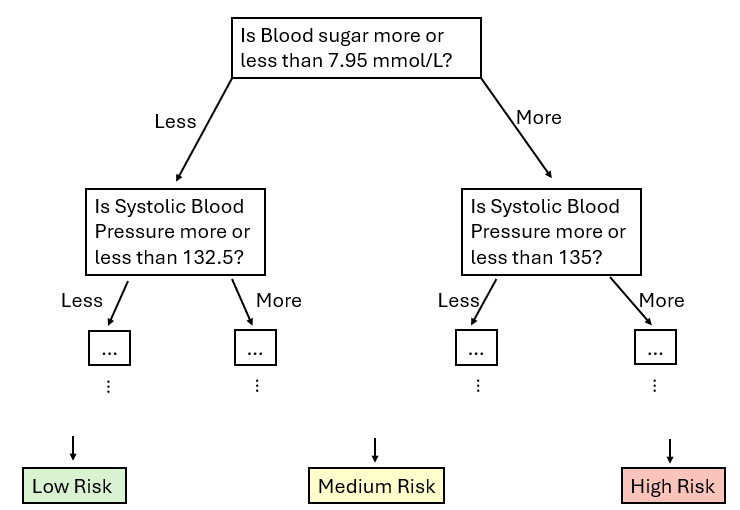
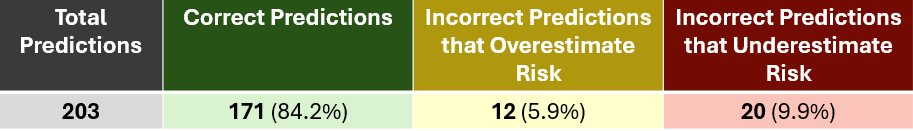

AI Use in Healthcare: An Example
Introduction
Access to quality healthcare around the world remains a pressing challenge, especially in rural and underserved communities. Despite significant advances in medical technology, many regions lack sufficient infrastructure and resources to address critical health issues. This is particularly true for maternal health, where the risk to pregnant women and new mothers remains alarmingly high. According to the World Health Organization (WHO), nearly 800 women died every day in 2020 from preventable causes related to pregnancy and childbirth. Many of these deaths occur in rural and underserved communities where it can be difficult to have a doctor visit these communities regularly enough to identify and prevent any deadly health problems in pregnant or newly post-partum women. This highlights the urgent need for innovative solutions to address the challenges of maternal health in these regions.
One promising approach is leveraging technology to help bridge the gap in healthcare access. By using machine learning models to predict maternal health risks from simple health data such as heart rate monitors and blood sugar readings, we can support healthcare systems in identifying high-risk cases early. This could relieve some pressure on healthcare professionals needing to travel to rural communities regularly, as machine learning could be utilized to predict people who may require extra monitoring and early intervention. Thus, it would be greatly beneficial to be able to use technology to identify women who may be at higher risk of death using simple health data such as heart rate monitors and blood sugar readings. For this project we used maternal health data from the UCI Machine Learning Repository which was sourced from a Pima Indians Diabetes Dataset. This project aimed to predict maternal health risk from health data such as blood sugar, heart rate, and blood pressure, and find which measure of these is the best indicator for predicting their maternal health risk.
An Example: Predicting Maternal Health Risk
There are many types of artificial intelligence methods which can be used to predict the health risk of a woman using some of her health data. After comparing several methods which classify an example (i.e. one woman’s health data) into a category (such as low, medium, or high risk), we chose a Decision Tree Classifier. You can think of it like a flow chart, for example, first it considers the blood sugar measurement and whether it is higher or lower than a value, then based on the result of that answer, it moves to the next health measurement, and so on, and so forth. The flow chart below shows the first few steps as an example.

Here we can see how our classifier would predict a risk level for a new person with their health data. Using the initial health data used to train the model, the model learned that the blood sugar level is a key indicator of health risk. Following this, the model checks the systolic blood pressure (i.e. The first number in a blood pressure reading; 120 if the blood pressure measurement is 120 over 80) to continue the prediction of health risk. It continues from here, looking at various other measurements of health data until finally predicting a risk level.
Assessing Model Performance
To assess how well our model performs we gave it some new data that was not used in the initial training and learning stages. From this we can see how well it performs by considering how many examples (i.e. women) in this new data it predicted the correct risk level for. Based on this metric the Decision Tree Classifier did the best compared to other models we tried, predicting over 80% of this new, unseen data correctly. This table shows how many examples the classifier predicted correctly versus incorrectly and whether the incorrect predictions overestimated or underestimated risk.

Since the goal of a machine learning project such as this is to predict health risk and send doctors to visit rural patients classified as ‘high risk’ we do not want to underestimate anyone’s health risk of as this could result in preventable deaths of pregnant or post-partum women. The model is not intended to provide healthcare directly, but to identify when the risk increases so that a doctor may be called to assess and treat the patient as needed. Therefore, we recommend additional research and modelling using health data be done before using a similar method in real-world communities.
Limitations
While using machine learning methods to assist healthcare professionals is promising and being tested in many areas of healthcare it is of course not without some limitations. One common problem with machine learning relates to the quality of the training data. For example, our maternal health risk example uses training data containing measurements such as blood pressure and blood sugar from real people used to build a model in order to predict their maternal health risk. Because the model uses training data in order to learn how to predict maternal health risk it is important that this data be of high quality (ie. accurate measurements, no duplicates, etc.), and be representative of the population. This is important because if the data used to train the model doesn’t capture the full diversity of possible maternal health data the model may learn the wrong things. For example, maybe in one area of the world most people have lower blood pressure, because of genetics, or altitude, diet, etc. Then, if that model were deployed in a different population the model may predict anyone with high blood pressure as high risk because it had never been exposed to high blood pressure in the training data. This is a common problem that results in machine learning models that seem to do well during training and then perform very poorly once used in the real world. In our example, the training data is from a population of diabetic Pima Indian women, thus likely not representative of the world’s diverse maternal population. A larger dataset, taken from different regions and countries worldwide would need to be used to be more inclusive of different factors influencing maternal health risk.
Another limitation is the privacy and ethical considerations regarding data storage and usage. Healthcare data is extremely personal, and collecting it from underserved communities-where data protection and privacy laws are often less robust-requires careful attention to ensure individuals are protected and their trust in healthcare and technology is maintained.
Future Steps
In this post, we explored an example of how machine learning, specifically the Decision Tree Classifier, can predict maternal health risks using simple health data. This approach has the potential to improve healthcare in rural areas by enabling early detection of high-risk cases, ensuring doctors are sent when there is increased risk identified, which could help reduce maternal mortality.
While our model showed promise with 80% accuracy, there are key limitations to address first, including the need for better performance, more diverse data and careful consideration of privacy and ethical issues. To improve accuracy and generalizability, future research should focus on creating diverse datasets, refining models, and ensuring ethical data handling.
Despite these challenges, this project demonstrates the potential of machine learning to enhance healthcare in underserved communities. With further development, AI can become a valuable tool in improving maternal health outcomes worldwide.